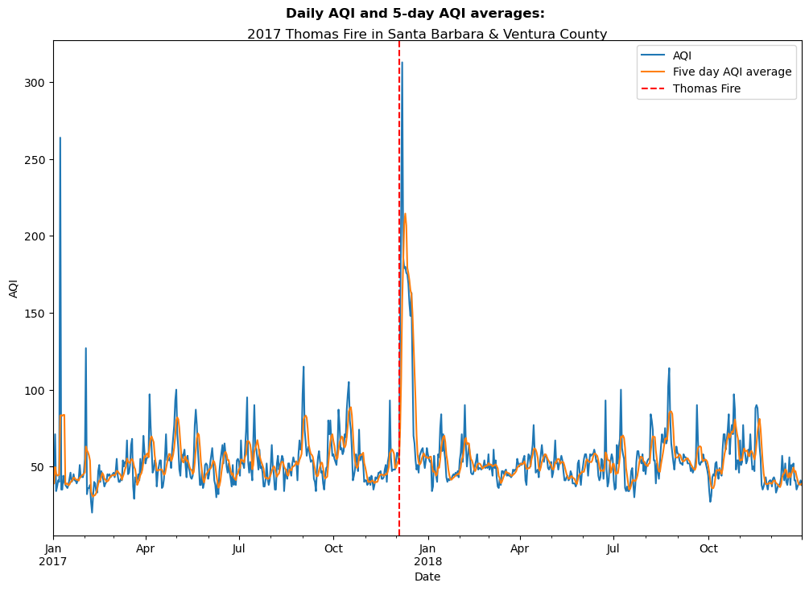

# Import libraries
import os
import numpy as np
import pandas as pd
import geopandas as gpd
import rioxarray as rioxr
import matplotlib.pyplot as plt
# Establish a file path for the landsat data
fp = os.path.join('data/landsat8-2018-01-26-sb-simplified.nc')
# Import the landsat data
landsat = rioxr.open_rasterio(fp)Thomas Fire Analysis
A visualization of the extent and AQI impact

Author: Stephen Carroll
This project repository can be found at: https://github.com/stephenccodes/thomas-fire-analysis
About
Purpose:
The intent of this notebook is to analyze two components of the 2017 Thomas Fire: - use remote sensing and fire perimeter data to create a false-color map of the fire and the surrounding area. - use air quality index(AQI) data to visualize the effect the fire had on air quality in surrounding communites.
The map will indicate the extent of the fire scar, and highlight areas that contain vegetation or bare soil with more contrast than a true color image. The AQI data will be visualized using a line graph and display how the fire affected the air quality over time. These goals will be achieved through various data analysis techniques and iterations of plots, outlined below.
Highlights:
- Import, clean, and manipulate a vector dataset
- Clean data using
pandas - Import, clean, and manipulate an xarray dataset
- Create a set of plots of the area in true and false-color without creating new variables
- Remove outlier values by adjusting the scale with the
robustparameter. - Import existing geo-data frame and implement it
- Create a polished map of the false-color image, with superimposed fire perimeter
Data Description:
Landsat Collection 2 Level-2
This data is a simplified collection of bands (red, green, blue, near-infrared, and shortwave infrared) from the Landsat Collection 2 Level-2 atmosperically corrected surface reflectance data, collected by the Landsat 8 satellite. The data was retrieved from the Microsof Planetary Computer data catalogue and pre-processed to remove data outside land and coarsen the spatial resolution.
Date accessed: 11/19/24
Original data source:
https://planetarycomputer.microsoft.com/dataset/landsat-c2-l2
California Fire Perimeters
This database contains information about spatial distribution of historic wild and prescribed fires in the state of California. The data comes with a warning that it is not comprehensive, with some records lost or damaged, fire perimeters may be missing. There may also be duplicate fires and over-generalization of fire perimeters. The database is maintained by the California Department of Forestry and Fire Protection’s Fire and Resource Assessment Program.
Date accessed: 11/19/24
Original data source:
https://catalog.data.gov/dataset/california-fire-perimeters-all-b3436
California County Air Quality Index
These are two datatsets that have daily air quality index(AQI) measurements for each county in California. The data was collected for airgov.now on behalf of the Environmental Portection Agency.
Date accessed: 10/26/24 ### Reference List:
U.S. Geological Survey. (n.d.). Landsat 8-9 OLI/TIRS collection 2 level-2 science products | USGS EROS Archive. U.S. Geological Survey. https://www.usgs.gov/centers/eros/science/usgs-eros-archive-landsat-archives-landsat-8-9-olitirs-collection-2-level-2 Access date: November 19, 2024.
Data.gov. (2024). California fire perimeters (ALL). Data.gov. https://catalog.data.gov/dataset/california-fire-perimeters-all-b3436 Access date: November 19, 2024.
Airnow.gov. (2017-2018). US Environmental Protection Agency. Air Quality Index (AQI) data from the US Environmental Protection Agency Access date: October 26, 2024.
Acknowledegements
All materials were created by Carmen Galaz-Garcia for EDS-220: Working with Environmental Data.
Part 1: True and False Color Imagery of teh 2017 Thomas Fire
True Color Image
Construct a file path to the Landsat data and read it in:
Data Exploration
# Find the CRS of the landsat data
print('CRS', landsat.rio.crs)
# Find the dimensions of the landsat data
print('Height: ', landsat.rio.height)
print('Width: ', landsat.rio.width)
# Find the data type of the landsat data
print('Data type: \n', landsat.dtypes)
# Find the geographic extent of the landsat data
print(landsat.rio.bounds(), '\n')CRS EPSG:32611
Height: 731
Width: 870
Data type:
Frozen({'red': dtype('float64'), 'green': dtype('float64'), 'blue': dtype('float64'), 'nir08': dtype('float64'), 'swir22': dtype('float64')})
(121170.0, 3755160.0, 356070.0, 3952530.0)
Data Exploration Summary:
To begin, I viewed the landsat data to learn more about it. It has the variables ‘Red’, ‘Green’, ‘Blue’, ‘nir08’, and ‘swir12’. These variables represent energy bands, and the last two variables have unique names but are assumed to represent near-infrared and short wave infrared bands. I found the coordinate reference system(CRS) used and printed the height(731) and width(870) of the dataset. I listed the data types for each variable, as well as the geographic boundary of the data.
Drop the band dimension of the data:
# Remove the first dimension(band) and drop the associated coordinates
landsat = landsat.squeeze().drop_vars('band')Select the red, green, and blue variables and convert it to an array and plot it:
Adjust the scale used for plotting the bands to get a true color image and plot it again:
# Remove the exterem values caused by cloud cover and plot it again
landsat[['red', 'green', 'blue']].to_array().plot.imshow(robust = True)
A note on extreme outliers in your data:
Initially, my plot displayed all of the values present, including extreme values caused by clouds or other interference. These extreme values affected the color scale, with most values rendering as either black or white. To remedy this, I adjusted to avoid the influence of these extreme values. When you set robust = True, the only values displayed are from the 2nd to 98th percentiles, allowing the color scale to better represent the meaningful range of values.
False color image
Plot the short-wave infrared(swir22), near-infrared(nir08, and red variables:
In the true color image above, the fire scar is difficult to see. To better visualize the extent of thew fire, we can use Red, Green, and Blue hues to display other parts of the EM spectrum. In this case, we will substitue the true colors for short-wave infrared(swir22), near-infrared(nir08, and red variables.
# Use SWIR, NIR, and Red wavelengths to viaulize the vegetation and burn areas better
landsat[['swir22', 'nir08', 'red']].to_array().plot.imshow(robust = True)
False Color Composite Map
Import Thomas Fire perimeter and convert the CRS to match Landsat data:
# Read in the Thomas fire data and convert CRS to match the landsat data
thomas_fire = gpd.read_file('data/thomas_fire/thomas_fire.shp').to_crs(landsat.rio.crs)
# Confirm the change was successful
assert landsat.rio.crs == thomas_fire.crsCombine both elements to create a composite map:
We can use the border of the data and the false color image we jsut created ti make a composite map that does a great job of highlighting exactly where the 2017 Thomas Fire burned.
# Define the landsat aspect ratio
landsat_aspect_ratio = landsat.rio.width / landsat.rio.height
# Initialize the figure and set the dimensions
fig, ax = plt.subplots(figsize = (9, 5 * landsat_aspect_ratio)) # Apply the aspect ratio
# Set the background color of the entire figure
fig.patch.set_facecolor('beige')
# Remove axes for cleaner map
ax.axis('off')
# Plot the false color remorte sensing data
landsat[['swir22', 'nir08', 'red']].to_array().plot.imshow(robust = True, ax = ax)
# Plot the Thomas Fire perimeter
thomas_fire.boundary.plot(ax = ax,
color = "red", # Color it red for emphasis
linewidth = 0.8)
# Add a main title
ax.set_title("The 2017 Thomas Fire Scar\n", fontsize = 12)
# Add subtitle describing the false colors
fig.suptitle("False Colors with Short Wave Infrared, Near-Infrared, & Red Wavelengths",
color = 'black',
fontsize = 10,
fontweight='light',
y=0.91)
# Add a legend for the fire boundary
ax.legend(labels = ['Thomas Fire (2017) Scar'])
# Add a footnote citation at the bottom of the figure
fig.text(0.379, 0.1, # Position
'Data Source: CAL FIRE & USGS EROS Archive',
ha='center', # Horizontal alignment
va='center', # Vertical alignment
fontsize=8,
color='black',
fontstyle='italic')
fig.text(0.395, 0.08, # Position
'Date Accessed: 11/19/24',
ha='right', # Horizontal alignment
va='center', # Vertical alignment
fontsize=8,
color='black',
fontstyle='italic')
plt.show()
Map Description:
The figure above displays the area burned during the 2017 Thomas Fire, as well as surrounding areas. The area outlined in red represents the extent of the fire perimeter. This is a false color image, with Short Wave Infrared(SWIR), Near-Infrared(NIR), and Red energy bands being visualized with Red, Green, and Blue colors, respectively.
The burn scar is displayed as red, because newly burned land reflects strongly in SWIR bands. The areas of the map that have vegetation are depicted by green colors, as vegetation reflect near-infrared light strongly, with healthy plants reflecting more than stressed plants. Accordingly, since the chlorophyll in plants absorbs red light, very little of the repesentative blue is displayed here.
Part 2: Visualizing how the 2017 Thomas Fire impacted AQI in surrounding areas
Data importation:
# Read in data on Air Quality from 2017 and 2018 to examine the Thomas Fire
aqi_17 = pd.read_csv('data/daily_aqi_by_county_2017.csv')
aqi_18 = pd.read_csv('data/daily_aqi_by_county_2018.csv')
# Combine 2017 and 2018 AQI data together
aqi = pd.concat([aqi_17, aqi_18])
# Simplify column names
aqi.columns = (aqi.columns
.str.lower()
.str.replace(' ','_')
)Data cleaning and filtering:
Let’s select the AQI data for the area of interest and ensure that the date column can be manipulated,
# Filter data to Santa Barbara county and select desired columns
aqi_sb = (aqi[aqi['county_name'] == 'Santa Barbara']
.drop(['state_name', 'county_name', 'state_code', 'county_code'], axis=1)
)
# Convert date to a datetime object and set as index
aqi_sb.date = pd.to_datetime(aqi_sb.date)
aqi_sb = aqi_sb.set_index('date')Data analysis:
Let’s create a new variable five_day_average to explore how the air quality remained changed over time
# Calculate the 5-day AQI averages
aqi_sb = aqi_sb.assign(five_day_average=aqi_sb['aqi'].rolling(window='5D').mean())Data visualization:
Now we can plot the AQ! and 5-day average over time to see how the 2017 Thomas Fire impacted it.
# Initialize a figure and axis
fig, ax = plt.subplots(figsize = (12, 8)) # Set dimensions relatively wide to space out lines
# Visualize air quality during the Thomas Fire
aqi_sb.aqi.plot(ax=ax, label = 'AQI')
aqi_sb.five_day_average.plot(ax=ax, label = "Five day AQI average")
# Show the date for the Thomas fire
plt.axvline(x = '2017-12-04',
color = 'red',
linestyle = 'dashed',
label = "Thomas Fire")
# Labels
# Title describing the area and event of interest
ax.set_title('2017 Thomas Fire in Santa Barbara & Ventura County',
color = 'black',
fontsize = 12,
fontweight='normal',
y=0.99)
# Subtitle describing the plot
fig.suptitle('Daily AQI and 5-day AQI averages:',
color = 'black',
fontsize = 12,
fontweight='heavy',
y=0.93)
ax.set_xlabel('Date')
ax.set_ylabel('AQI')
ax.legend()
# Display the figure
plt.show()
Citation
BibTeX citation:
@online{carroll2024,
author = {Carroll, Stephen},
title = {An {Analysis} of the 2017 {Thomas} {Fire}},
date = {2024-12-04},
url = {https://stephenccodes.github.io./blog_posts/thomas-fire-analysis/thomas_fire_analysis.html},
langid = {en}
}
For attribution, please cite this work as:
Carroll, Stephen. 2024. “An Analysis of the 2017 Thomas
Fire.” December 4, 2024. https://stephenccodes.github.io./blog_posts/thomas-fire-analysis/thomas_fire_analysis.html.